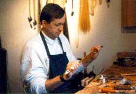

Kontrabassbögen
|
 |
Zdzislaw
Prochownik Etobicoke ON
Kontact: Gisèle Blondeau |
Sehr geehrter potenzieller Kunde,
Die letzten zwanzig Jahre verdiente ich mein Geld als professioneller Kontrabassist bei drei der groessten Orchester in Kanada. Seit jeher fasziniert von den Eigenschaften eines guten Bogens, begann ich mit verschiedenen Arten zu experimentieren und stieg endgueltig in die Bogenmacherindustrie ein.
Ermutigt durch zahlreiche Erfolgserlebnisse als Hobby-Bogenmacher, mein Interesse verstaerkte sich in 1991, als Resultat des Lernens vom Jean Grunberger in Frankreich.
Meine Boegen sind ein wenig anders als die ueblichen Bogen auf dem Markt.
Wenn ich einen Bogen mache, konzentriere ich mich auf den Fokus: klarer, durchdringlicher Klang, mit einer schnellen Klangwidergabe.
Fuer Kuenstler die normalerweise schwerere Boegen gewoehnt sind, koennen meine Boegen anfangs ein wenig ungewohnt erscheinen, doch nach einer kurzen Eingewoehnungsphase wird zu erkennen sein, dass schwerere Boegen normalerweise nicht die Sensibiliaet und sofortige Klangwidergabe haben wie die leichten Boegen.
Warum die Erdanziehungskraft, die Geschwindigkeit, und eine Handverletzung riskieren wenn man mehr als das mit weniger Aufwand erzielen kann?
Alle meine Boegen haben ein grosses Bogengewoelbe und sind der Rolle gemäß sehr flexibel. So konstruiert, dass man den Bogen horizontal mit minimalem Druck ziehen kann, benoetigen sie einen kleineren Straffungsabstand zwischen dem Holz und dem Haar. Jeder Bogen ist gefertigt aus dem besten vorhandenen Pernambucoholz und wird mit Ultraschallwellen auf Kraft und Flexibilitaet geprueft. Die Funktionalitaet als Schwerpunkt betrachtet, die Boegen sind versilbert und individuell ausbalanciert fuer die bestmoeglichen Resultate , bietet jeder Einzelne exzellenten Kontakt zur Saite sowohl die Deutlichkeit im “Ohne Saite” Spielen. Alle Boegen im Franzoesischen Stil kommen mit einem Daumengummi um dem Spielkomfort beizutragen.
Beim Testen der Boegen empfehle ich den Vergleich mit anderen Boegen beim Spielen verschiedener schwieriger Passagen, sowohl, falls es moeglich ist, aus gewisser Distanz dem Klang zu lauschen zum Vergleich. Bei der Herstellung meiner Boegen benutze ich nur das feinste Schweifhaar des Kanadischen Weissen Pferdes, welches den besten Griff anbietet. Alle Boegen warden in einem professionellem symphonischen Orchester getestet bevor sie zum Kaeufer losgeschickt werden.
Zur Zeit stelle ich drei verschiedene Abweichungen des Bogens im Franzoesischen Stil her:
“Solo” - Haarlaenge um die 55 cm, ein wenig mehr gebogen und steiferes Holzstueck, starr, sehr klangintensiv und extrem reaktionsstark, wiegt dieser Bogen zwischen 125 und 130 Gramm. Sowohl das Haar als auch das Holz fuehlen sich sehr steif an, was der Regel nach sehr gut zum Spielen von Solos oder schnellen Mozart Passagen geeignet ist. Der Klang ist eher hager.
“General- use” - Haarlaenge von etwa 55 cm. weniger gebogen und das Haar ein wenig lose, was einem ein wenig mehr Luft in den Klang ermoeglicht und ein Gefuehl vom groesseren Klang erweckt, jedoch ein wenig lose in der Schnelligkeit der Wiedergabe. Dieser Bogen wiegt zwischen 125 und 135 Gramm.
“Sartory” – Diese Boegen sind etwa ¾ Inch kuerzer und haben mehr Abstand zwischen dem Holzstueck und dem Haar. Meine Freunde nennen ihn den “ Sartory mit Attituede”. Dieser Bogen ist sanfter und behutsamer und wiegt zwischen 125 und 130 Gramm.
Die französischen Bögen - ähnlich Sartory- und Vigneron-Modellen (135-150 Gramme) gemacht vom Massaranduba Holz.
Alle drei Franzoesische Modelle sind hervorragend, doch es kommt sehr auf den Spielstil an, welcher Bogen fuer Sie geeignet waere. Ich bevorzuge den direkten Kontakt zu einem potenziellen Kaeufer und stehe gerne beratend zur Seite bei der Auswahl. Alle Deutsche Modelle haben eine Haarlaenge von 55 cm und wiegen zwischen 115 und 130 Gramm.
Preise: Bitte rufen Sie mich an oder schreiben Sie mir!
Alle Boegen meiner Herstellung garantieren eine bessere Handhabung als Ihr alter Bogen, oder Sie kriegen Ihr Geld voellig zurueckerstattet.
Meine Boegen werden zurzeit in zahlreichen grossen Symphonieorchestern in Nordamerika, Europa, Brasilien und Tasmanien benutzt, sowohl auch von vielen Studenten von Paul Ellison, Fracois Rabbath und vielen anderen anerkannten Lehrern.
Einige Auszuege der zahlreichen Empfehlungsschreiben:

"I enjoy using your bow very much. Sixteenth-note passages seem easier to play
with more clarity of pitch and articulation." - Clifford Spohr,
Principal Bass, Dallas Symphony Orchestra 1993
"Bows which do all tricks." - George Vance, Washington
"Z. Prochownik understands bass and the bass bow. I've played at least fifteen
of his bows, both German and French models, and many of them are as
good as anything I've played on. He understands balance and tension in the stick
and how to fine tune an individual piece of wood. He reworked my award-winning
Nuedorfer and actually improved its performance. My other bow is a Prochownik."
- Eric Hansen, Principal Bass, Winnipeg Symphony Orchestra 1994
"My other bow is a Sartory." - Stan Label, Assistant Principal Bass, Winnipeg
Symphony Orchestra 1993
"Your bows are the best new bows I've tried." - Betty Girko, Dallas Symphony
Orchestra 1994
"Thank you for your incredible craftsmanship and most amazing German bow I have
ever played." - David Moore, Los Angeles, CA 1993
"The Prochownik bows
which I use, and won a position in the Wiener Philharmoniker with, allow me the
most detailed articulations, while guaranteeing a full sound and precise string
contact in the most delicate musical moments. They are equally excellent in the
large repertoire of the Weiner Philharmoniker from Donizetti to Berg." Bartosz
Sikorski-2001
“I
purchased a bow from you about two years ago. I am extremely pleased with it and
everyone who tries it out thinks it is incredible”.
Bill Bentgen
Cross Junction,
Virginia 2001
“The bow is fantastic.” Enzo Figliuzzi , Vancouver 2002
" I still can't believe the tone it gets out of my bass. It's like I went out and bought a whole new bass!" Matt Stromberg Kearney NE USA 2004
"It has transformed my playing and I'm so happy with it, it's perfect for both solo and orchestral playing! Best wishes and many thanks, Nicki Davenport" UK 2004
"With my bass, your bow sounds wonderfully clear, I love the way it draws over the string, it feels amazing from tip to frog, it bounces incredibly and has a wonderful punch to it and the list goes on." Jordan O'Connor Toronto 2007"
"The Sartory is simply a pleasure to work with, playing with it is practically effortless! My bass has never sounded better! I will definitely be recommending your bows to my friends!" Patrick A. Montreal 2007
"Hi ! I'm still in the National Symphony here in Dublin, very pleased with the bow I purchased 2 years ago".. Edward Tapceanu 2007
"I really love it and it fits well in the hand and gets a great tone from both my basses! Thanks - it's really a great piece of craftsmanship." L. Fantasia L.A USA 2008
"I currently use a "master" old French bow and to be very honest and serious your bows sound better and are easier to play" Calvin Marks. Toronto 2008
"The bow I like most is one of the most responsive and articulate bows I have ever played - bravo" - David Odegaard Texas 2008
"As I thought, the bows are wonderful, the light one it's incredible precise and the 124-126 grams full of harmonics, all of them suitable for every piece, from solo to orchestra playing. Thank you very much for your excellent art." il primo contrabbasso della "Orquesta Sinfónica de Galicia" Spain -2009.
"I did a couple of Messiahs last week, and, apart from the aching back, enjoyed them thoroughly. Your bow worked marvelously, so much control, spiccato, even at the tip, the bow felt really long, which meant to me that it is much more usable at the tip. My long tones felt longer, everything is great. People even are commenting on the different sound. This is the sound as opposed to the Sartory I have been using for 38 years. Thank you so much for the beautiful hand made bow". Jack McFadden, Ontario, Canada 2009
" I gotta tell you, I immediately loved the bow. It's made from beautiful wood and is much lighter than my present bow (153g). From behind my bass, I thought it was quieter than my other bow. But, after my last orchestra rehearsal, our principal cellist came back and asked me if I was playing a new bass, because I sounded so much better. I told him I was auditioning a new bow an he stood out front and had me switch back and forth between the 126g Purpleheart bow and my old one. Out front, your bow projected much more, was louder, had more harmonic content, sounded fuller, and made my other bow sound "nasal" in comparison. I am quickly getting used to the lighter bow, and feel like I can play longer without fatigue, and that I can play challenging passages easier (I'm currently working on Beethoven's 9th)." Russell Bergum Virginia, MN 2010
"I love the bow. It is a joy to play and exactly what I was looking for. Multiple people said if I didn't buy they would " Steven Fox Columbus OH. 2012
"A professional and accomplished colleague joined me to listen and play on bows. There were 6 bows in the mix- widely varied in size and shape. The Prochownik bow drew a sound similar in power and inflection to a bow that weighed 10 grams more- the biggest bow we had in the mix. As I was playing the Prochownik bow, my colleague described it as "Effortless!" Of all the bows I demonstrated, the Prochownik bow- and only the Prochownik- sounded effortless to the listener. I am sure that the reason he heard it as such is because the bow plays that way: of all the bows I have tried in my time, this Prochownik bow best allows me to draw a lovely sound with the least effort. It projects very well, too! Incidentally, my colleague said later that day, "If you don't buy that bow, I will." Eric Seay College Park MD 2012
"So the bow is great, i'm getting used to it very fast. The sound in the upper register is what I needed, clear and with a lot of projection… it's very comfortable and with a fast response. I'm, very happy with the bow, congratulations on your work! " Alvaro Rosso Lisbon Portugal 2019
Dear Maestro Prochownik, in February of this year I bought one of your bows from the Pollmann workshop and it immediately became one of my favorites (consider that I own twelve bows, including Bazin, Pfretschner, Massari, Morizot, Slaviero etc.).Lately I've been using only your bow; has almost become a drug !!! ... I love it! .I don't know if we will meet because I live in Italy and I no longer have a great desire to travel (especially with the double bass!); But I wanted to congratulate you because I had been looking for a bow like this for years.I am including a link where I perform the H. Fryba Gigue with your bow, hoping to please you.Congratulations again and good luck with everything.
Paolo
Badiini
Copyright © 2026 Zdzislaw Prochownik.